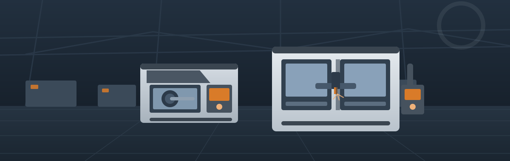
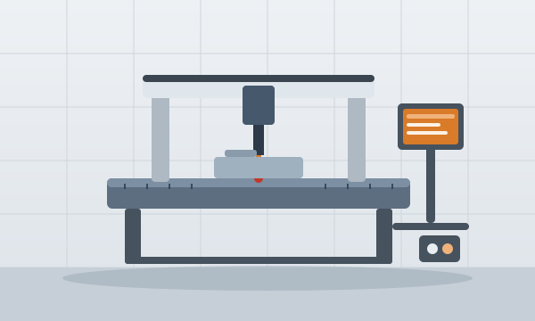

ООО «СтанкоПрецизион» работает на рынке металлообрабатывающего оборудования с 2011 года: начинали как сервисная бригада по наладке станков с ЧПУ, выросли в поставщика с собственным производственным участком.
Компания в цифрах
15 летна рынке оборудования
342станка запущено
1 800 м²производственный участок
28инженеров и наладчиков
Как мы развивались
Год
Этап
2011
Основание компании: сервис и наладка токарных станков с ЧПУ в Москве и области
2014
Первый производственный участок на территории завода «Калибр», 400 м², 6 станков
2017
Запуск направления поставок: дилерские договоры с заводами-производителями РФ и Беларуси
2019
Первый 5-осевой обрабатывающий центр, выход на авиа- и приборостроительные заказы
2022
Расширение участка до 1 800 м², парк вырос до 42 единиц, открыт демо-зал
2025
Собственный склад ЗИП и инструмента, регламент ТО для постгарантийных станков
2026
Парк 42 станка, 342 отгруженные машины по России, от Kaliningrad до Vladivostok по сервисным контрактам
Производство
Токарная группа: 14 станков с ЧПУ (Fanuc, Siemens 828D, GSK), обработка до Ø630 мм
Фрезерная группа: 11 вертикальных и обрабатывающих центров, из них 3 пятиосевых
Измерительная лаборатория: КИМ Mitutoyo Crysta-Apex, профилометры, стендовая выверка геометрии
Две смены по будням, при загрузке - третья смена по согласованию с заказчиком
Технологический отдел: постпроцессоры под стойки заказчика, расчёт режимов резания
Склад ЗИП: шпиндельные подшипники, ШВП, револьверные головы, энкодеры, датчики
Демо-зал: 5 станков в работе, показ обработки по записи

Производственный участок - 1 800 м², две смены, 42 единицы оборудования

Измерительная лаборатория - КИМ Mitutoyo Crysta-Apex, протоколы измеренийСклад ЗИП - шпиндельные подшипники, ШВП, энкодеры, инструмент
Качество
Система менеджмента качества соответствует требованиям ГОСТ Р ИСО 9001-2015 (ISO 9001:2015). Каждая деталь на заказ проходит входной, операционный и приёмочный контроль; критичные размеры проверяются на координатно-измерительной машине с выпуском протокола. По запросу заказчика прикладываем карты измерений и сертификаты на металл.
Хотите посмотреть производство вживую? Запишитесь на экскурсию по участку через отдел продаж - покажем станки в работе и образцы деталей.